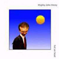
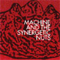
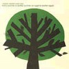
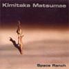
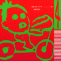
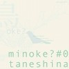
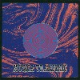

strange music page
japanese strange music * * * Ma - Mo
- Mighty John Henry
- 巻上公一
- MACHINE AND THE SYNERGETIC NUTS
- 町田町蔵
- MARBLE SHEEP
- 松前公高
- maher shalal hash baz
- 美尾洋乃
- Mio Fou
- 溝口肇
- meatopia
- minoke?
- 三橋美香子
- 三宅純
- 向島ゆり子
- MUSICA TRANSONIC
- メトロファルス
- めいな Co.
- MEKONG ZOO
- MOST
- モダンチョキチョキズ
#えーとfishermen tit totとかFoMoLoで、今はYapoosと戸川純バンドのDennis Gunnのバンドです。fishermen tit totで良く見てて、結構この人の歌が好きだったので買ってみました。結構前のアルバムなんですけど。
あんまりアヴァンギャルド風味ではなくって、ちょっと癖の強いロックバンドっと言った感じかな。Dennis Gunnのボーカルは一瞬Jim Morrisonに似てるような気がしました。Dennis Gunnのエゲツナイ感じのギターとボーカルが好きになれればokかなと。自分は好きなんですよね、このアクの強い感じが。
ちなみにデニスガンって何者かと言うと、ニコレットのコマーシャルで
吸いたくなるマン（ほんとにこーゆー名前らしい）を演じてる人です。(2004.2.29)

- Welcome to the Zoo
- 10,000,000 Bloodshot Eyes
- Momma's Killing Daddy
- Lie Factory
- Rats in the Cage of Reason
- Naked Monkies (with their tails on backwards)
- the Crystal Palace
- the Bright Side of the Sun
- Ken
- Heaven is a Wire
- Pachinko Rebellion
- Dennis Gunn (vocals,guitars,harmonica,pianica,banjo,bongo)
- 多田牧男 (drums)
- 本田達也 (bass)
- Emi Elenola (accordion,pianica on 1.)
- Sadato (tenor sax on 8.)
- 清水一登 (piano,synthesizers on 10.)
- Draw Fay (digeridoo on 10.)
- Gary Lucas (guitars on 11.)
- 横山秀規 (bass on 11.)
- ホッピー神山 (synthesizers,cassett on 11.)
Creativeman Disc/Alida: CMDDD-00041 (1996.10)
#濃ゆいアルバムです。昭和の変な歌謡曲をさらに変態にしたような感じです。
なんかねー、一回聞くと脳裏から離れないよーな感じ。メンツだけ見るとアヴァンギャルドなんだけど、実際は超変態歌謡曲っていう・・・なんかスゴイ世界ですよ。
- さいざんずマンボ
- 女を忘れろ
- 待ちぼうけの喫茶店
- 悪人志願 -雨と風の詩-
- すきやきエトフェー
- 夜空の笛
- 東京の屋根の下
- 帰ってきたヨッパライ -N.Y. Version-
- うつろ
- マリアンヌ
- 殺しのブルース
- 巻上公一
- 上野耕路 (arrangement on 1.)
- 東京ナミィ (vocals on 1.)
- John Zorn (arrangement on 4.)(alto sax,vocals on 10.)
- 灰野敬二 (chorus on 4.)(guitars,vocals on 10.)
- 大友良英 (chorus on 4.8.)(arragement,turntable,guitars on 8.)(sample on 11.)
- 加藤秀樹 (chorus on 4.8.)(bass on 8.9.)
- 黒田京子 (piano,voice of goddess on 8.)
- 植村昌弘 (chorus on 8.)
- Hoppy神山 (killer on 11.)
- Mick Harris (drums,vocals on 10.)
- Bill Laswell (bass on 10.)
- Marc Ribot (guitars on 2.8.11.)
- John Patton (organ on 2.)
東芝EMI/EAST WORLD: TOCT-6496 (1992.6.17)
#
Rotter's Paperの記事を見て、気になって買ってみました。もーこの気持ちをweb上のテキストで無理矢理表現すると、ってな感じです。（テキストじゃねぇ）
メンバーの経歴とかは
公式サイト見ていただくとして、Thermo聴いてもSPOOZYS聴いてもMELT-BANANA聴いてもこんな格好いいと思ったこと無かったもんなー。
基本線はX-Legged Sallyみたいな疾走系のジャズロック、時々Soft Machineも入るような感じですけど、とにかく押しまくりの音です。曲が展開するタイミングとかが絶妙で飽きさせない感じがイイです。なんつーかケツの穴が締まる感じ。
いわゆるレコメンとかカンタベリとかジャズロックに類する音だけど、プログレ系聴いてこんな格好イイと思ったのはほんと久々。つまんない曲無いです、買おうよ。(2003.7.1)

- PEAK
- OR LOTS OF SQUARES
- BERLIN
- GATE OF DIFFERENCE
- TIME
- TENSEGRITY
- METROPOLICAN
- A COUPLE OF KETTLES
- SWANG
- マヒマヒ (soprano sax,tenor sax)
- 須藤俊明 (drums,percussions)
- スズキヒロユキ (bass)
- 岩田ノリヤ (keyboards)
- 高橋結子 (percussions on 4.5.7.8.)
- 夘木英治 (vibraphone on 5.7.9.)
- 松江潤 (guitars on 5.9.)
- 君島結 (effects mix on 8.)
ADAMSKI RECORDINGS/
ALIBABA RECORDS: ADAM-2/ALBB-001 (2003)
#そもそも町田町蔵(現:町田康)って聴いたことないんですよ、当然INUも。
んで何でこのCD(カセットブックの復刻CDらしいけど)買ったかっていうと
至福団のCDってのを結構気に入ってたからなんですけど。
音ですけど、小西健司のエレクトロビートに町田町蔵の叫びが交錯する非常にカッチョイイ音。4Dだともうちょいニューウェーブっぽいんで、このかっちょいいエレクトロは北田昌宏さん(After Dinnerにも参加してたみたい)の資質かも知れないですけど。ジャンク/コラージュ/インダストリアル/エレクトロ。
あ、「続どてらい奴ら」では横川理彦(4D,After Dinner,P-Model,Metrofarce)さんがベース弾いてます、えらい手数のベースでめっちゃ格好良い。
自分の好きな臭いたっぷりのCDでした、大当たり。今度INUも聴いてみようかな。(2002.8.17)
IronBeatManifesto(小西健司)
- どてらい奴ら
- 機械がどんどん廻る廻る
- アミダへの道
- ちゃんぽん部屋
- 心臓賭博
- 天守閣（至福城）
- 六年寝る
- 続どてらい奴ら
- 戦場の牛
- コンガを叩いたインコを殺した男
- みな木が欲しい
- 小座敷ドッグ
- 路傍の亀
- 失敗の本質
- 町田町蔵
- 北田昌宏
- 山崎春美
- 小西健司 (programming,synthesizers)
- 箕輪扇太郎 (drums)
- 横川理彦 (bass on 8.)
- カンガン (on 11.12.)
PARCO SECTARY: QTCA-1001 (original release 1986)
#あのCAPTAIN TRIPの社長のバンド、そいでCAPTAIN TRIP RECORDの1枚目だったりします。元々CAPTAIN TRIPってコレ出すためのレーベルだったみたいですけど。
ゆるーい感じの浮遊感の有るサイケです、OZRIC TENTACLESとかGONGとかに近いと思いますけど。
このCDはえらい昔に買ってて忘れてました、久々に聴いてみたらやっぱりユルかったです。このアルバム自体は良いとは思わないけど、こーいうユルい音は好きです。
- In The Beginning
- Big Wave - New Year In Kenya
- Melted Moon 2
- Electric Rodeo
- Fish
- I'm Just Staring At The Upside
- From The New Stone Age
- 松谷健 (guitars,vocals)
- Takeuchi Kei (guitars,vocals)
- Chikuwa (bass,vocals)
- Kimoto Osamu (keyboards,vocals)
- Watanabe Yasuyuki (drums,percussions,vocals)
- Ikeda Yasuhiko (drums)
- Sekiguchi Takeya (lighting design)
- Kimi (backing vocals)
- Hirano (backing vocals)
- Bob (m.c.)
CAPTAIN TRIP: CTCD-001
#ライヴしか見たことの無かった、工藤冬里さん = マヘルのCDです。パステルズのレーベルから出たベスト盤。3枚のアルバムと2枚のコンピレーションからの収録です。
チグハグな中に時々ハッとさせられるようなライヴで感じていた印象は相変わらずでした。スタジオ盤は違う雰囲気なのかなと思ってたんですけど、そーでもないみたいです。
おそらく1985年の録音の部分(正確に何曲目がどのアルバムからの収録かわからないので)は結構気に入ってます。前半の日本語のボーカルはちょっとキツイです、チグハグすぎ。
あと
コンポステラの篠田昌巳さんと中尾勘ニさんが参加してて、何曲かそんな感じのトーンの曲もあります。暗いけど力強いような感じの。シェシズの向井さんも参加してるみたいですね。
英文のライナーに "...deep-linstening Syd Barrett" とかいう箇所を見つけて、ちょっとナルホドとも思いました。全体的にはナゾの部分の方が多いんですけど。(2001.10.15)

- unknown happiness
- street corner college
- cupbearer's instrument
- wings of the dawn
- summer
- last day
- flowerages
- azazel
- street corner college
- noon recess after american pops
- on the shore of loch kawaguchi
- heart and soul and mind
- septermber come I will
- great gothic country song
- ruah
- nephesh
- goodbye
- unkwon happiness
- heart and soul and mind
- summer
- mountain sheep
- butterfly
- many things
- lunch scene in 8mm film
- clock song on a holiday
- medicine for the melancholia
- unknown happiness
return visit to rock masss (1996)
the mshb and pass over musings cassettes (1985)
maher goes to gothic country (1991)
tokyo flashback 3 (1993)
salute! at the 13th note, glasgow (1999)
- 工藤冬里 (piano,guitars,vocals,bass)
- 服部夏樹 (guitars)
- Izawa Yuzo (guitars)
- Kudo Namio (wind noise)
- 工藤礼子 (vocals)
- Mitani Masashi (bass)
- Mitani Shunji (tenor sax)
- Morishita Toshikazu (synthesizers,guitars)
- 向井千恵 (胡弓)
- 中尾勘ニ (soprano sax)
- Nakazaki Hiroo (euphonium)
- 西村卓也 (guitars)
- Oizumi Kiwame (piano,organ)
- Saito Hiro (bass,vocals)
- Saya (drums,vocals)
- Shibayama Shinji (bass)
- 篠田昌巳 (alto sax)
- Suzuki Uta (soprano sax)
- Takahashi Ikuro (drums)
- Takahashi Tsukasa (drums)
- Ueno (alto sax)
- Watanabe Koichiro (violin)
GEOGRAPHIC: GEOGRAPHIC-1-CD (2000)
#松前公高さんの1994年にTRANSONICからリリースされた1stアルバム。随分探してたのですけど、新宿DISK UNIONにてあっさり発見。
シンセ多重録音のSFっぽい世界。エキスポとか「あなたはキツネ」でのアホアホっぽい雰囲気はゼロで、ちょっと暗い感じの電子音楽・・・というかミニマルテクノでプログレの曲をカバーしたような感じ（？）
格好イイのですけど・・・フロア向きでは無く、プログレとか前衛な人は聴かなさそうで、ラウンジとかにはちょっと暗すぎるかな。でも全国に何人いるかわからない松前公高さんファンには是非。音の質感とか凄まじく格好良いです、シンセで宅録してる人とかとても参考になりそうな。(2004.2.29)

- Space Ranch
- Moon & Jupiter
- Flower Floor
- Gyratory Space Shakers
- Osmosis
- Galactic Bone
- Tab Enid
- Satelite Tab Enid
- Infiltration
- 松前公高 (composed,arranged,all instruments)
TRANSONIC RECORDS: TRS-25007 (1994)
#Disk Union渋谷にて、\300(!) とりあえずこの値段なら買いです。これであなたはキツネシリーズあと1枚になった。んでもってこれは1から4の中で一番古い録音でコラージュというかコラージュの断片が68曲。このひとは音楽作りはじめからこーなんだなーという感じ。ずーっと真面目に不真面目な曲を作ってる感覚、シンセに愛が感じられます。(1999.2.12)
- あなたはキツネ
- あ～ん
- ディレンジ
- ワナワナ
...中略...
- 81年12月21日
- ボーデン
- 壮観
- マンマルリン
- I.D.
- 千歳船橋
KIMITAKA MATSUMAE: MKM-6131 (1997)
#えーと、"1983年から85年の作品集。エキスポ結成のきっかけにもなった曲が収録されている。当時の未収録音源も追加されてCDでの再発。52曲入り"(あなたはキツネ4に載ってた紹介文、原文ママ)だそうです。面白いのもあるのですが、なにせ断片的な曲ばかり52曲も入っているのでちょっとつらいです。エキスポ好きなひとならOKかも。
- 両国ブルース
- 浅草マーブル
- 本物の味
- 老人と人参
...全部書くの面倒なので省略します....
- 松前公高 (produced,composed,arranged,recorded & all instruments)
KIMITAKA MATSUMAE: MKM-6132 (1997)
#エキスポの松前さんのソロ作。これは"4"で1から3も出てるみたいです。内容は明るく楽しいテクノポップ、ちょっとゲーム音楽っぽいやつです。

- MEET THE R.A.M.
- きびちいわね？大丈夫ね
- MAX DRIVERS
- Circles, Children & Bridges (Demo)
- Go to Fontana (Demo)
- Nomans Space
- Space Golf
- For Absolute Girls
- 歯を見せて/何を言ってるんですか？
- 何が美味しいの？
- Endless Futures
- Go to Fontana
- INTER-FACE-INTER-TRIP
- 世界共通の句読点
- 宇宙砂場
- アフリカナウマン鳥の生活
- 地獄のお風呂
- 喉につまるもの
- 百万光年大旅行
- Commend 120
- ReCommend 120
- 松前公高 (produced,composed,arranged,recorded & all instruments)
KIMITAKA MATSUMAE: MKM-6134 (1997)
#えーと吉祥寺マンダラ2でライヴを見ようと思って、ちょっと早く着いて。1Fのアヤシイ古本屋さんの隅っこにサンプル盤で、\300で売ってました。あまりにカワイソウなので買っちゃいました(たぶん千円以内なら買ってたけど)。
PSのゲームみたいです。ちょっと全体的に地味暗な雰囲気かなぁ？でもやっぱしツボは押さえてますけど。
そいでそのマンダラ2の上の古本屋はいつのまにかとてもジャンクな店になっていました。とてもヒマ潰せました、「ピコエンターテイメント」のバックナンバーとか、戸田誠司の対談本などもゲット。(1999.12.14)
- OPENING THEME REMIX
- VISiON OF SOUTH part 1
- VISiON OF SOUTH part 2
- VISiON OF SOUTH part 3
- FURLOUGHS
- SATAVISA BASEMENT
- BIFROSS ARMORY
- THE TOWER
- CONDITION GREEN
- ENDING THEME REMIX
all songs composed,arranged & played by 松前公高
SONY RECORDS: SRCL-3496 (1996.3.21)
#メトロトロン関係での活躍の多いバイオリン弾きです。２枚ソロアルバムを出してますが、両方ともコケティッシュな感じの歌ものです。
- ベラドンナ・リップ
- RAIN
- 月の果実～ミツバチ
- 白い街で
- ALICE
- ONE WAY
- ベラドンナ・リップ (live version)
- 水の中のバレリーナ
- 美尾洋乃 (vocals,violin,piano)
- 渡辺等 (bass,cello,mandolin)
- 矢部浩志 (drums,tambourine)
- 近藤研二 (guitars)
- 張紅陽 (piano,keyboards,accordion)
- 鶴来正基 (piano,keyboards)
- 鈴木千夏 (violin,fagotto)
- ライオンメリー (tabla)
- 錦織ゆたか (guitars)
- Morikawa Hiroko (chorus)
vivid sound/SOLID RECORDS: SCCD-5002
#メンツ的には気になる感じですけど、このアルバムはあまり好きじゃないです。
あんまり曲に魅力を感じないので。
- chloe
- 約束の天使
- 眠らない子供たち
- 人喰いカタツムリ
- ワルツの季節
- 黒い美術館
- カナリヤ
- 睡蓮
- 夜の木
- flower
vivid sound/solid records: SCCD-5004 (1989)
#ムーンライダーズの鈴木博文さんと歌うバイオリン弾きの美尾洋乃さんのアルバムです。BGM的なノスタルジックで静かな音楽です。
美尾さんのソロアルバムより好き。
- 大通り
- ベルフェゴールは誰だ
- 海の沈黙
- 白亜の心
- ミラノの奇跡
- 夢見るジュリア
- 子供達のメトロノーム
- ピカソの青
- PIERROT LE FOU
- ゴッホの糸杉
- 美尾洋乃
- 鈴木博文
- 野宮真貴 (vocals)
- 鈴木智文 (programming)
METROTRON RECORDS: compactron-27
#えーと、最近「癒し系」とか妙なジャンルに括られて売れてたりする、世界の車窓からの溝口肇さんの3枚目のソロ。
この頃は初期ゴンチチみたいな感じで、少しテクノポップみたいな音をやってたりしてます。この頃のシンセの音が少々いたない感じですけど、メンツ見ればわかるようにKILLING TIMEとかREAL FISHとかあの辺りの影響があります、変拍子テクノポップの曲が有ったりと面白い曲も有ります。今の溝口肇さんのイメージで聞くとちょっと痛い感じかもしれませんが。
- PLANT AQUARIUM
- マガダの時間予報
- ３月うさぎ
- カラー・ビュー
- ART CRAFT
- 上海倶楽部
- 7TH BLUE
- モノクローム
- ブラック・バード
- 東京幻想曲
- ウォーター・ダンス
- 溝口肇 (cello,keyboards,percussions)
- 青山純 (drums on 1.2.6.)
- 渡辺等 (bass on 1.2.3.5.6.7.)
- 清水一登 (piano,vibraphone on 1.2.4.5.7.8.)(clarinet on 9.)
- 松浦雅也 (fairlight,CMI on 1.)
- 山木秀夫 (drums on 5.9.)
- 川島バナナ (keyboards on 5.8.)
- 佐藤清 (tuba on 6.)
- 矢口博康 (sax on 7.)
- 藤井"Ma*To"将登 (tabla on 9.)
- 梅田学 (horn on 9.)
- 楠木誠志郎 (voice,chorus on 10.)
SONY RECORDS: SRCL-3162 (1987)
#横川理彦さんの色が強いです、Tipographicaでも演奏されている"青空だけど迷宮入り"が収録されてます。いつもながらに無国籍でつかみどころのない音楽。
- neighbors
- タラスコン組曲３ do the tarascon
- ミートピアの逆襲
- indonesian time
- 天狗と散歩
- ミートピア
- タラスコン組曲２ にんにく入りスープ
- 青空だけど迷宮入り
- フル・スイング
- 黄金の時
- オレはセクシーかい？
- タラスコン組曲１ ラッパと太鼓
- 横川理彦 (bass,bouzouki,mandolin,violin,voice,percussions)
- 今堀恒雄 (guitars,bass,keyobards,mandolin,percussions)
- 松本治 (trombone,trumpet,pianica,organ)
vivid sound/Cycle Records: CYCD-9303 (1993)
#吉祥寺のシルエレで見たminoke?ってバンドのCD-R（
VITAL REOCRDっていうPOSEIDONのCD-R版みたいな所から）です。\1000。
VITALのサイトとかでは、「Bruford,Area・・・」とか書かれてましたけど、どっちかというと日本のIL BERLIONEとかラクダカルテットとかのアッチ系の音に近いような感じがします。
あんまり派手な所は無いですけど、短いフレーズのループを組み合わせてくような曲は結構面白いです。えーと、ベースは渡辺等好きそうな感じの。
このまま突き詰めていってもいいけど、パーカッションとか入ると面白いかもなーとか思ったりもしました。 (2004.1.27)
（
→minoke?のサイト）

- Til_na_nOg
- Turkish David
- Atarimae
- Tri-Band-Boom
- Nagoya no Itoko
- kawaguchi yasushi (5string fretless bass,chapman stick)
- takahashi katsunori (drums,percussions)
- kayama kosei (tenor sax,soprano sax)
- sekido kunihiko (keyboards)
VITAL RECORDS: VR-011 (2003)
#現在
ONIで活躍する三橋美香子さんのソロアルバム、仙波清彦さんが全面参加してる他、
P-modelのことぶき光さんが曲を書いている。買ったときはそれ程印象に残らなかったのですが、最近聴きなおしたらとても格好良かったです。
- ちんダン
- あらちょいと
- Seasons
- みちかけ
- GRACE
- White Sky
- Sister in the World
- Full Blossam
- Come Together
- Medicine Man まじない師
- Misbehave
- 三橋美香子 (vocals)
- 仙波清彦 (drums,percussions)
- 坂田明 (saxes on 4.8.)
- 渡辺等 (bass on 4.)
- 丸尾めぐみ (piano on 4.)
- Iizuka Masaaki (guitars on 5.6.9.11.)
- 恒松正敏 (guitars on 9.)
- あがた森魚 (chorus on 9.11.)
- ことぶき光 (composed on 1.5.7.8.)
- 高橋豊 (composed on 10.11.)
vivid sound/JARAJARA RECORD: JC-003 (1990)
#三宅純さんのCD・・・っても良く知らないんですけど、Kievさんの
LOVE YOU JMが詳しいです。というかココでほぼすべての情報が集まってそう。
なんつーか、もうジャンルバラバラな音が一枚のCDに詰まってる感じです。菅野よう子のサントラとかにも近いけど、アレよりもバラバラ、わざと全曲違うような感じにしたのかな？参加メンバーも不思議な感じで、Marc Ribot/Peter Scherer/村上秀一/窪田晴男/原マスミ・・・不思議だ。
個人的な好みは「DIE AUGEN DER SEELE」、Anthony Colemanのピアノとバックで鳴ってるMarc Ribotのギターがかっちょいい。(2003.4.22)
- ALTO
- MA PUCE
- HER EXTRA EYEBALLS
- アジサイ
- まぼろばの国
- 白い手
- CRIME PASSIONEL
- ELLE
- BUILDING MAN
- DIE AUGEN DER SEELE (魂ノ瞳)
- CA FAIT LONGTEMPS (常春乃雫)
- AQ-1/BM-REPRISE
- 三宅純 (piano,pianica,trumpet,flugelhorn,programming)
- 宮本大路 (sax,drums,percussions)
- 伊丹雅博 (guitars,charango)
- 高橋下駄夫 (bass)
- 渡辺等 (mandocello,acoustic guitar)
- 窪田晴男 (guitars)
- 村上秀一 (drums)
- 金子飛鳥 (violin)
- 金原千恵子 (violin)
- Takeuchi Kaori (violin)
- Fukami Kuniyo (violin)
- Shiga Keiko (violin)
- Murayama Tatsuya (viola)
- 四家卯大 (cello)
- Don Alias (percussions)
- Evelyn Bennu (vocals n 2.)
- 葛生千夏 (vocals on 3.)
- 村川聡 (vocals on 5.9.11.)
- 冨樫春男 (piano on 6.)
- Pecker (percussion on 6.)
- 原マスミ (vocals on 6.)
- 佐山雅弘 (piano on 7.)
- SUBLIME (vocals on 7.)
- Evelyne Bennu (vocals on 8.)
- Peter Scherer (piano on 10.)
- 村田陽一 (trombone on 9.10.12.)
- Zach London (boy soprano on 10.)
- Maeda Yuki (soprano on 10.)
- Hal Willner (turntable on 10.)
- Marc Ribot (guitars on 10.)
- Anthony Coleman piano on 10.)
- かの香織 (vocals on 11.)
- Whacho (percussions on 11.)
- Hamada Hitoshi (marimba on 11.)
SONY MUSIC ENTERTAINMENT/CONSIPIO RECORDS: TDCD-90522 (1993)
#BEAMS RECORDSから出ていた三宅純さんのアルバム、仮想リゾートみたいなコンセプト。三宅純さんについてはKievさんの三宅純ファンサイト
LOVE YOU JMに詳しいです。
1曲目からエキゾチックな感じの（ビリンバウの音だよね？）出だしで、福岡ユタカのオタケビがイイ感じです。あとこの曲、裏に入ってくるfender rhodesがとても良いです。
後半はもーちょいリラックスした感じですけど、やっぱクオリティは高いように思います。リラックスしたバックの中でピアノの音がテンション高めてるよーな感じで。
個人的には↑のヤツより気に入りました。(2004.1.30)
- Rain Forest
- Lotus Isle
- River of Gold
- Mosquito Path
- Gnossienne #1
- Pico Birds
- Lost Honeymoon
- Brazil
- Stones bearing Flowers
- Lokasa
- Raft of Love
- Postcard!
- 三宅純 (piano,fender rhodes,flugelhorn,trumpet,recorder)
- 高田みどり (marimba,percussions)
- 渡辺等 (bass,ukulele)
- 三沢またろう (percussion,berimbau)
- 福岡ユタカ (voice)
- 宮本大路 (bass clarinet,wood blocks,drums)
- 四家卯大 (cello)
- 朝川朋之 (harp)
- 山木秀夫 (drums)
- 富樫春夫 (piano)
- 山口とも (percussions)
- 駒沢裕城 (steel guitar)
- 伊丹雅弘 (guitars,ukulele)
- 高橋ゲタ夫 (bass)
- 村田陽一 (trombone)
- Whacho (percussions)
- おおたか静流 (voice)
- B.B. Mo-Frank (voice)
- 桑野聖 (strings)
- 佐山雅弘 (piano)
BEAMS RECORDS: COCD-9244 (2000.10.25)
#えーと長らく「買おう買おう」と思いつつ買ってなかった（店で直接見かけないと買わない悪癖）向島ゆり子さんの1996年のソロアルバムです。
タンゴがテーマなんでしょーか？（そーいえば「
パンゴ」は「パンク+タンゴ」だったなぁ）、それはともかくバイオリン（アコーディオンも）のメロディーがとても気持ちイイです。特に3曲目の久下さんの打ち込みみたいなドラムの音の塊の中から、バイオリンが切り込んで来る所とか何度聴いてもたまらん。
参加ミュージシャンも面白いですね、Tom Cora,Samm Bennet,Wayne HorvitzなどのN.Y.勢の人も居れば、カーネーションの直江さんに、
劇団時々自動（元パンゴ）の今井次郎さんとか、もちろん清水一登さんとか梅津和時さんとか。
バラエティ有って面白いっす、SOLA聴いててコレ聴いて無い人いたら今すぐ
off noteのサイトから是非。(2003.6.24)
- It's Fine Today
- ミロンバ
- I Miss You
- ひえつき節
- Wait!
- Untitled
- Tango
- ハバネラ
- 恋の予感
- 向島ゆり子 (violin,accordion,sample,voice)
- 清水一登 (piano)
- Wayne Horvitz (piano)
- 小松亮太 (bandneon)
- 梅津和時 (clarinet)
- 直江政太郎 (guitars)
- 早坂紗知 (sax)
- 吉森信 (synthesizer,hammond organ)
- 久下昌三 (thermin,o.o.o)
- 今井次郎 (sample,voice)
- 木津茂理 (voice)
- 吉野弘志 (wood bass)
- 松永孝義 (wood bass)
- Tom Cora (cello)
- Samm Bennett (percussions)
- 久下恵生 (drums,percussions)
off note: ON-13 (1996)
#HIGH RISEの南條、Acid Mother Templeの河端、RUINSの吉田。
1996年に出た2ndですけど、帯のたたき文句の「サイケデリック/アヴァンギャルド/フリージャズ/混沌」って通りですね、「ズガガガガ・ズピー・グギャギャギャギャギャ」って感じの音です。
叩き過ぎ、弾きすぎ、ボリューム上げすぎの三拍子揃ってます。ライナーのフォントが'Symbol'で、曲目打ち込むの面倒でした。(2003.2.19)

- A Pilgrims Solace
- Officium Defunctorum
- Il Belhumore
- Doxologia
- Flos Florum
- Confessiones
- Haec Dies
- La Chasse
- Graduale
- Ludea
- Miserere Nostri
- 南條麻人 (bass)
- 川端一 (guitars)
- 吉田達也 (drums)
PSF RECORDS: PSFD-76 (1996)
- do the tarascon
- 風狂伝
- 大航海時代
- マラスキーノ伯爵の大快楽園
- アニトラの踊り
- 君の心のsad monkey
- sunset motel
- ジャージー・ロージー
- ままよ、さばさーれ
- 今は昔の僕ぢゃない
- 屋根裏アンファン
- 蒼空のチリアクター
- Limbo島
- 東京暮色
- 蝙輻翁
- 憂いの玉箒
- あんなに空が
- 風来坊とアーティチョーク
- オーロラ・レゲェ
- zingaro
- dom perignon,noel,santa maria
- 世界の果てでnonと叫びし小さきケモノ
- 宇宙アンファンテリブル
- さまよえる楽団
- 伊藤ヨタロウ (vocals)
- ライオンメリー (accordion,keyboards,vocals)
- 石坪信也 (drums,bodhran,vocals)
- 光永巌 (bass,guitars,vocals)
- 横川理彦 (mandolin,bass,violin,vocals)
- 上野洋子 (vocals on 3.)
- 川口義之 (alto sax on 8.)
- シュガー吉永 (chorus on 7.)
- 大野由美子 (chorus on 7.)
- 青山陽一 (chorus on 7.)
Egg-man disk: ECD-3001 (1996)
#えーと、"MIDORI"という映画のサントラ。ほとんど横川理彦さんが作曲してますね。
ノスタルジックな響きがキモチイイですね。
- MIDORI Main Theme
- 屋上
- "HIERARCHIA" Pt.1
- HIKARU #1
- MIDORI Theme
- 保健室
- SHUN
- "HIERARCHIA" Pt.2
- HIKARU #2
- MIDORI Humming
- 横川タダヒコ (composed,arranged,mandolin,bass,guitar)
- 伊藤ヨタロウ(directed)
- ライオンメリー (accordion,keyboards)
- 石坪信也(drums,percussions)
- 光永巌(bass,guitars)
- 田村玄一(guitars)
#曲の断片と、アイディアスケッチのよーな音が沢山。面白いのも有れば「何コレ？」も。
- BUG PARTY
- サフラン
- ベニチュア
- まさかのLETTER
- 聖杯城(ピアノ的即興)
- MANIELLA
- 蛤のソロモン焼き
- 東洋ルナパーク
- シュミラクラクラ号
- 倉庫でAdios
- 東京黒色 (Dance & Soul Mix)
- ライオンと魔術師
- 我が愛しのサブコ
- BOTTLE MUSIC #3
- もの思う犬
- ９オンスの砂
- ピアニカ即興
- HYPNO-MEDITATION
- AURORA EXPRESS
- 雨について
- Hey Hey Monkeysのテーマ
- NO THANK YOU DAD
- 働かない人
- 船を数える
- 森
Metrofarce Records: MFR-00A (1996)
- 俺さま祭り
- 東京UNDERGROUND
- 夜のポストリュード
- のるかそるかPOLKA
- へなちょこBLUE
- たまらん節
- 聖珠
- 吉祥天
- ほーせんか ぱん！
- 消えゆく男達
- PIGEON WING
- 米の歌
- 伊藤ヨタロウ (vocals)
- ライオン・メリー (accordion,keyboards,tabla,kalimba)
- 石坪信也 (drums,percussions,vocals)
- 光永巌 (bass,guitars,vocals)
- 横川理彦 (mandolin,bass,violin,vocals)
- 川口義之 (saxes,recorder,percussions)
- 松本治 (trombone on 2.)
- 戸川純 (chorus on 8.)
- 四家卯大 (violin,cello on 8.12.)
- 木津茂理 (chorus on 12.)
- 石垣千香 (violin on 12.)
- 民謡子 (chorus on 12.)
Rambling Label: RAL-9801 (1998.5.1)
- JUST WANNA TOUCH HER
- TOKYO NIGHT LIFE (DJ KRUSH MIX)
- THEME #1
- CLUB-B #1
- CONVENIENCE
- t V O
- CLUB-B #2
- THEME #2
- TOKYO NIGHT LIFE (ORIGINAL MIX)
- 浦山秀彦 (guitars)
- 張紅陽 (keyboards)
- 奥野敦士 (vocals)
- 秋吉満ちる (chorus)
- 清水一登 (clarinet)
- DJ KRUSH (scraching)
GRASS FRUITS,INC: GFD-1(1991)
- The Maiku Hama Theme (Main Title)
- Die Schlimmste Zeit
- The Origin
- Shadowed
- The Maiku Hama Theme
- Investigation
- Action
- Dragon
- Bloodstained Dogs
- -dialogues-
- The Most Terrible Time in My Life
- キネマの屋根裏
- La dance deshabillee de Lily
- 浦山秀彦 (guitars,synthesizers)
- 張紅陽 (accordion,synthesizers)
- 古村敏比古 (sax,flute)
- 菊地成孔 (tenor sax on 1.5.11.)
- 佐々木史郎 (trumpet on 1.5.11.)
- 松本治 (trombone on 1.5.11.)
- 清水一登 (piano,vibraphone on 1.5.11.)
- 松永孝義 (bass)
- 佐野康夫 (drums)
- ASA-CHANG (percussions)
- 堀江健治 (perscussions on 1.5.11.)
- 相良奈美 (German vocal on 2.)
- 高関詢子 (French vocal on 13.)
FOR LIFE: FLCF-28235 (1994.3.2.)
#えーと林海象監督の濱マイクシリーズの二作目のサントラ。メンツの通りのサントラですけど、一曲目の"水の音"、上田知華作曲のいかにもなタイトル曲ですけど、山本京子さんの声の説得力ありすぎ。ちょっとぐっときます。
- 水の音
- The Maiku Hana Theme '95
- Lily
- 白い男～狂気～
- 尾行
- The Maiku Hana Theme -jet board-
- 赤い靴
- 時代を遡る音楽
- 白い男～the River～
- ching-dong
- -introduction-
- ストリップミュージック #1 (踊るリリー)
- ストリップミュージック #2
- ストリップミュージック #3
- kowaching
- 浦山秀彦 (guitars,synthesizers)
- 張紅陽 (accordion,synthesizers)
- 山本京子 (vocals on 1.)
- 松下誠 (guitars on 1.)
- Onozawa Atsushi (keyboards on 1.)
- 古村敏比古 (sax,flute)
- 菊地成孔 (tenor sax on 2.5.6.7.10.)
- 西村浩二 (trumpet on 2.5.6.7.10.)
- 松本治 (trombone)
- 清水一登 (piano,vibraphone)(clarinet on 5.11.16.)
- 松永孝義 (bass)
- 佐野康夫 (drums)(和太鼓 on 11.16.)
- ASA-CHANG (percussions)(trumpet on 15.)
- 堀江健治 (percussions on 2.5.6.7.10.)
- 桑野聖strings (strings)
FOR LIFE: FLCF-3559 (1995.3.17)
#濱マイクシリーズの三作目。
- 影男 -prologue-
- 濱マイク探偵事務所
- The Maiku Hana Theme '96
- 影男 -main title-
- ロマンス
- ミッキー
- 忍び寄る影
- ミッキー（こうふくのさいらい）
- 捜査
- Lily of the Valley
- ロマンス
- 濱マイク絶体絶命
- ESCAPE
- ミッキーの夢
- The Trap
- ロマンス -epilogue-
- それ行け星のタクシーONDO
- -dialogues-
- The Maiku Hana Theme
FOR LIFE: FLCF-3641 (1996.5.17)
- Yaaba
- Kasta
- Nustarian
- DNA
- The Last Whale
- Yamo Island
- Old House
- Minimal Dance
- Quadruped
- Confessions
- Amadare
- 清水三恵子 (keyboards,drums programming,voice)
- 金子飛鳥 (vioiln,keyboards,voice)
- Dominique Brethes (synths,electronics)
- Graham Dids Dowdall (percussion,electric drums)
- Techie (backing vocals on 3.6.)
ReR Recommeded: WMCD012 (1995)
#PHEWさんの
パンクバンドMOSTのCDです。
こないだ(2001.9.26)のライヴに行き損ねて、悔しかったので買ってきました。 big pictureも出てたけどそれはまた今度買おうかなと。
メンバーは山本精一さん(ボアダムズ,羅針盤,ROVO,NOVO-TONO)と山本久土さん(PHEWバンド)と西村雄介(スターリン,NOVO-TONO)。ドラムの人は知らないんですけど、年季の入った人ばかり。
パンクかどーかなんて事はどーでも良いのですが、格好イイです気合入ってます。グラップラー刃牙(チャンピオンの漫画)で言うと
花山薫って所でしょうか？ わかりにくい喩えですみません。
山本さん二人のギターのグシャっとした感触がたまんないです。ちなみに
PHEWさんのサイト。(2001.9.30)
- ないないない
- 点在・密集
- どうでもいいじゃない
- 電流時間
- 誰かが呼んでいる
- なにひとつ
- 匿名の不幸
- 四角
- 絵になるためだけに
- おはよう
- 破片風景
- 毎日
- PHEW (vocals)
- 山本精一 (guitars,vocals)
- 山本久土 (guitars,vocals)
- 西村雄介 (bass,vocals)
- 茶谷雅之 (drums,vocals)
P-VINE RECORDS: PCD-5647 (2001.9.25)
- ハロー！ドドイツ
- 主夫の生活
- あたまはクラクラおめめはグルグル
- 恋の山手線
- 新・オバケのＱ太郎
- 甘い予感
- しとやかな獣
- 愚か者
- B.M.W. (Black Magic Woman)
- サラリーマンノーデリカシーバットナイスピープル (サラリーマン太平記)
- ティーンエイジドドンバ
- さよならはつらいや
- 「ボンゲンガンバラガラビンゲンの伝説」予告編
- 濱田マリ (vocals)
- 磯田収 (guitars)(composed on 2.)
- 矢倉邦晃 (composed on 1.7.10.11.12.13.)(arrangement)
- 渡辺渡 (guitars)
- 芳垣安洋 (drums,percussions)
- ヌルピョン (voices)
- フィリップ (voices)
- 吉村智樹 (voices on 3.)
- 桧野有司 (bass)
- 今中規子 (keyboards)
- 保山宗明王 (voices)
- 山崎圭巳 (sax on 2.)
- 大竹徹夫 (programming,keyboards)(percussion on 8.)
- 大川達之 (programming)
- 前渕訓秀 (drums on 3.8.)
- 長谷部信子 (keyboard on 3.10.)
- 岸本基 (violin on 5.13.)
- 中村岳 (percussion on 11.)
- 岡本光広 (percussion on 11.)
- 小林信之 (clarinet on 11.)
- ザ・ゴールデン・ホーンズ (brass)
- Chris Babida (keyboards on 1.6.12.)
- Ian Tung (programming on 1.6.12.)
- So Tak Wah (guitars on 6.12.)
- Rudy Balbuena (bass on 1.6.12.)
- 香港楽団 (chinese instruments on 1.6.12.)
KI/OON SONY RECORDS: KSC2-13 (1992.7.22)
#タイトルは"別冊～"ですけど、モダチョキのアルバムの中では一番気に入ってます。
長谷部信子さん作曲のめちゃめちゃポップな曲とか今聴いても良いですね。あと個人的には中原信雄編曲の3曲目なんて、いかにもーな感じで嬉しいですけど。
- 天体観測
- ジャングル日和
- 素敵な空気
- 感情移入反応鑑識報告
- らいか いのしし
- 自転車に乗って
- コント・コンデンサー
- サンタがまちにまっている
- THE 絶望行進曲
- 流行性感冒 INFLUENZA
- 主夫の生活 '94
- CHEAP JOKE IN JAPAN
- 新・オバケのQ太郎 MEGA MIX
- 最果ての唄
- オリエンタル マジック ステレオ ドラマ
track 1.6. composed by 長谷部信子
track 3. composed by 吉森信
track 8.11.14. composed by 磯田収
track 9.13. composed by 山本直純
track 5. composed,arranged by 濱田マリ
track 3. arranged by 中原信雄
track 1. arranged by
戸田誠司
track 6.8. 奈良部匠平
- 濱田マリ (vocals)
- 山田直樹 (engineering)
- 笹原与志一 (engineering)
- 磯田収 (guitars)
- 戸田誠司 (programming,synthesizer)
- 長谷部信子 (programming,synthesizer,backing vocals)
- 美久月千晴 (bass on 2.6.)
- 江口信夫 (drums on 2.)
- 是永巧一 (guitars on 2.)
- 松本晃彦 (programming,keyboards)
- 木村誠 (percussions)
- 数原晋 (horns on 2.)
- Jake H.Conception (horns on 2.)
- 松本治 (horns on 2.)
- フィリップ君 (backing vocals)
- ヌルピョン (backing vocals)
- 渡辺等 (acoustic guitar,bass on 3.)
- 福原まり (piano on 3.)
- 宮田繁男 (drums on 3.)
- 中原信雄 (bass on 3.)
- 土岐幸男 (programming,synthesizer on 3.)
- 多田暁 (trumpet on 4.)
- 本田昌生 (bass,accordion,steel drum,programming on 4.)
- 奈良部匠平 (programming,keyboards on 6.8.)
- 村上"ポンタ"秀一 (drums on 8.)
- 荒川康男 (bass on 9.)
- 坂田誠山 (尺八 on 9.)
- 宇山恭平 (guitars on 9.)
- 長芝正司 (drums on 9.)
- 大原茂人 (pianon on 9.)
- 是方博邦 (gutars on 11.)
- 吉森信 (keyboards on 11.)
- 河村光司 (horns,arrangement)
- 芳垣安洋 (drums on 11.)
- 梶野秀樹 (bass on 11.)
- 村石雅之 (drums on 14.)
- 宗秀治 (bass on 14.)
- 本間昭光 (keyboards on 14.)
KI/OON SONY RECORDS: KSC2-76 (1994.6.22)
#すげー参加メンバーです。というかもうこの頃はモダンチョキチョキズって実体の無いものだったのかもしれないです。曲調も全然バラバラです。ちょっとこのアルバムはやりすぎなような気もしてます。
んで、これ以降はアルバム出てないです。濱田マリのソロのアルバムとか出てますけど結構フツーの(とっても質の高いポップスで気に入ってはいるんですけど)CDになってしまってます。濃ゆい雰囲気が聴けないのはちょっと残念なような気もします。
- T.D.L.
- エケセテネ
- トムのいる木陰
- ドロンゲーム
- i wish...
- バブル
D.J. & B.G.M. Part 1
- 林檎殺人事件
- デートコース
- 新しとやかな歌
- 上辺よし子さんD.J. & B.G.M. Part 2
- くまちゃん
- 悲しみのマーナ
- 「Made in Taiwan」予告編
- 濱田マリ (vocals)
- 矢倉邦晃 (produced,composed)
- 磯田収 (composed,guitars)
- ヌルピョン (D.J.)
- フィリップ君 (D.J.)
- akira (finger-5) (backing vocals)
- 井上智士 (alto sax)
- 岩田英司 (trumpet)
- 内橋和久 (guitars,arranged)
- 浦田雄揮 (trumpet)
- 桧野有司 (bass)
- エリック宮城 (trumpet)
- 大原裕 (trumpet)
- 梶野秀樹 (bass)
- 川村光司 (tuba)
- 岸本基 (violin,backing vocals)
- グスターボ・グレゴリオ (bass,vocals)
- 是方博邦 (guitars)
- 財津一郎 (vocals)
- 佐久間勲 (trumpet)
- 塩谷博之 (flute,alto sax)
- 島健 (piano)
- 白井良明 (guitars)
- バカボン鈴木 (bass)
- ゼンジー北京 (vocals)
- 仙波清彦 (percussions)
- 武井努 (tenor sax)
- 楯川陽二郎 (drums)
- 土岐幸男 (synthesizers)
- 中島徹 (piano,trombone)
- 永田有広 (trumpet)
- 中原信雄 (synthesizers,arranged)
- 中山かほる (harp)
- 中村岳 (percussions)
- 長谷部信子 (vocals)
- 服部義満 (alto sax)
- 林直身 (drums)
- 広兼剛 (trombone)
- fukushin (bass)
- 福原マリ (piano)
- 保山宗明王 (vocals)
- ポテ西イモ治 (baritone sax)
- 本多一光 (trumpet)
- 真城めぐみ (vocals)
- 村田陽一 (trombone)
- 森敦功 (trombone)
- 三原修 (bass)
- 矢口博康 (saxes)
- 矢部浩志 (drums,percussions)
- 山北健一 (percussions)
- 山崎圭己 (alto sax,tenor sax)
- 山本拓夫 (saxes)
- 芳垣安洋 (drums,percussions)
- 吉森信 (organ)
- 渡辺等 (bass)
KI/OON SONY RECORDS: KSC2-92 (1994)